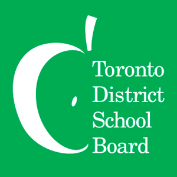
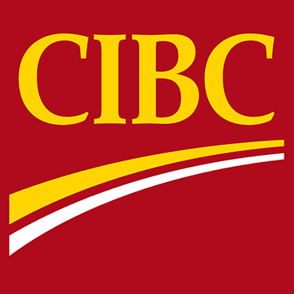

About Me
Hi, I'm Kevin. I'm currently a student attending Seneca Polytechnic's Computer Programming & Analysis
Program. I'm still exploring my ambitions, but for the moment,
I am dedicated to learning as much as I can!
In my free time, my main hobbies are cooking and video games. I have already begun using those as bases for personal projects of mine. With time, I can hopefully both improve my skills and make something fun!
You can contact me at:
kevinmao1999@gmail.com
Linkedin
GitHub
In my free time, my main hobbies are cooking and video games. I have already begun using those as bases for personal projects of mine. With time, I can hopefully both improve my skills and make something fun!
You can contact me at:
kevinmao1999@gmail.com
GitHub

Toronto District School Board
Co-op, Telecommunications
& Network Services
& Network Services
Jan 2025 - Present
Seneca Polytechnic
Advanced Diploma, Computer
Programming & Analysis
Programming & Analysis
Jan 2023 - Present

CIBC
Client Service Representative
Feb 2022 - Jan 2023